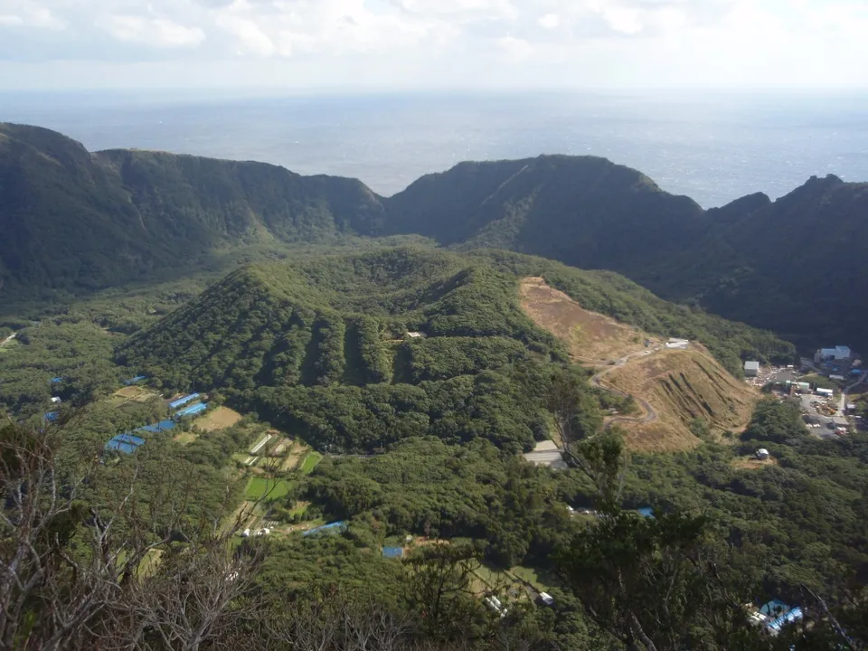
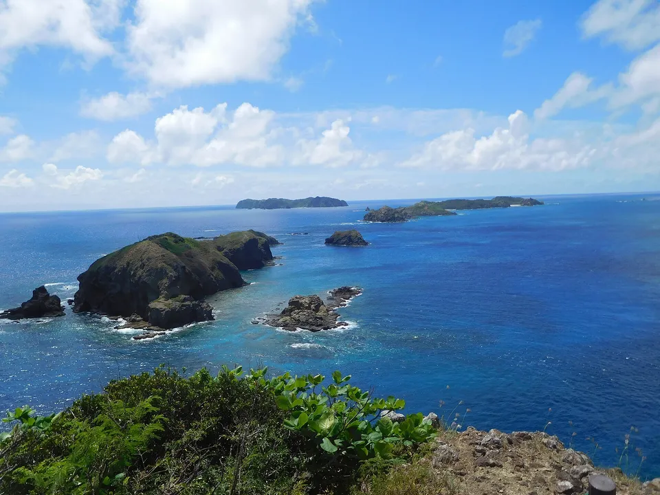
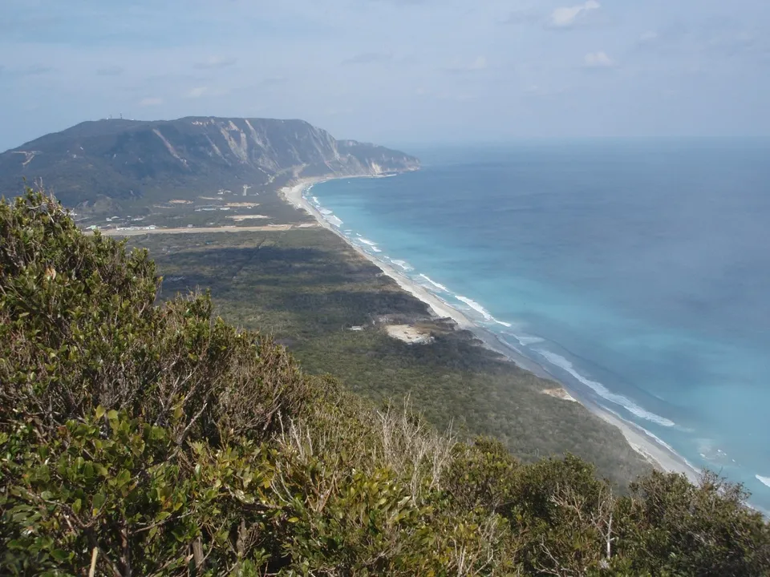
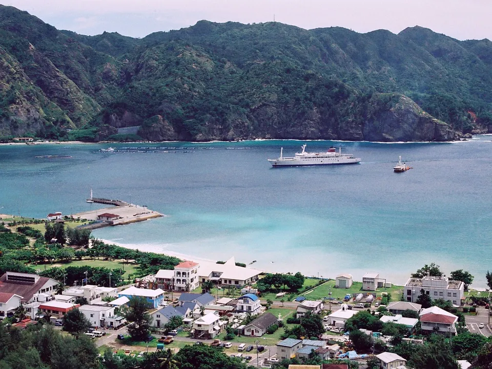
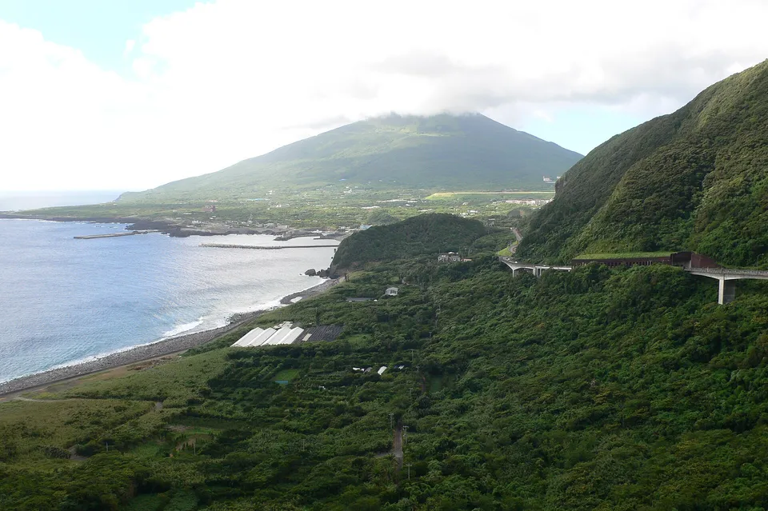
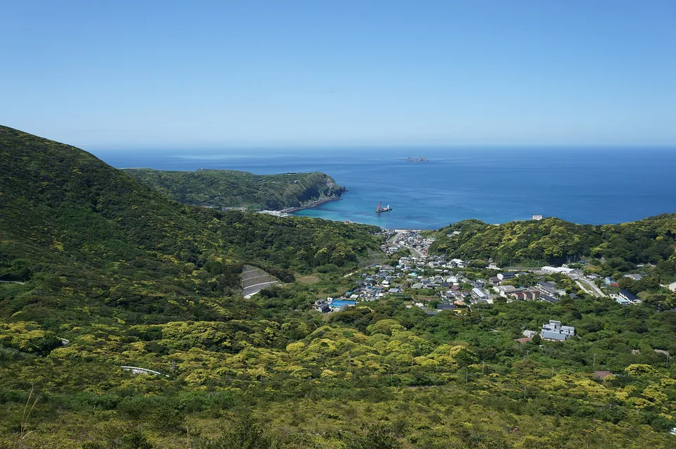
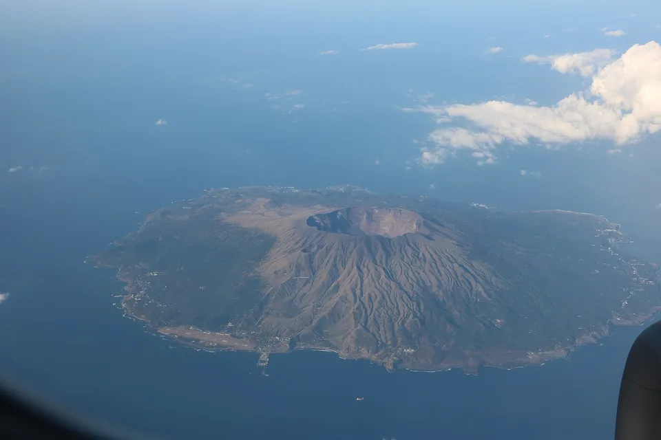
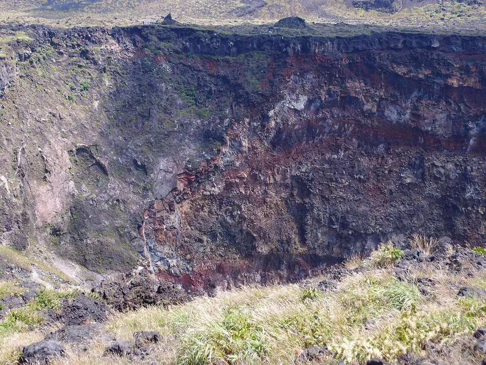

{kind=link}
Tokyo has 11 inhabited islands and they run a thousand kilometres out to sea: Ōshima, which you can do in a day; the surf and hot-spring islands in the middle; Hachijōjima an hour's flight away; Aogashima, 178 people inside a volcano; and Chichijima and Hahajima, twenty-four hours by the only ship. Same prefecture, different worlds.
The Tokyo slice of our national island table — same numbers, plus how you actually get to each one, because that is the whole question here.



Photos: Aogashima: the Maruyama cone inside the outer caldera — Soica2001 ( talk ) via Wikimedia Commons, Public domain · Hahajima from Kofuji, at the southern end of the inhabited islands — Ootahara via Wikimedia Commons, CC0 · Habushiura, the six-kilometre surf beach on Niijima — Soica2001 ( talk ) via Wikimedia Commons, Public domain
{kind=link}
{kind=link}
{kind=link}
A prefecture that runs out to sea
Tokyo Metropolis runs from Shinjuku to an atoll 1,800 km out in the Pacific. In between are 11 islands with people on them: the nine Izu islands strung south from Sagami Bay, and the two inhabited Ogasawara islands a day's sailing beyond. Every one is administered from Tokyo, most are reached from Takeshiba pier by the Hamamatsuchō station, and they could hardly be more different from each other — Ōshima is a day trip; Chichijima needs a week.
This is the Tokyo slice of our table of every inhabited island in Japan: same source, same columns, with the boats and flights added, because here the way you get there is the whole story. If you came for the anime settings, that article is here.
The shape of it
Source: SHIMADAS (Japan Islands Center, 2019 edition), 2015 census and GSI figures; Shikinejima from Wikipedia.
The islands people go for
Thirteen islands, one prefecture, and a thousand kilometres between the first and the last. These are the ones people go for.

Chichijima and the Ogasawara
A thousand kilometres south of Tokyo, no airport, and one ship: the Ogasawara-maru takes 24 hours and sails about once a week, so the shortest trip is six days. Chichijima (2,156 people) is a World Natural Heritage island with whales, endemic snails and the Minamijima lagoon; Hahajima (461) is two more hours south. "Bonin" is old English for bunin, 無人 — uninhabited, which they were until the 1830s.
{kind=link}
Aogashima
178 people on a double volcano — a cone inside a caldera inside the sea — and the smallest village in Japan by population. Reached from Hachijōjima by a 20-minute helicopter (nine seats, book a month ahead) or a boat that is cancelled roughly half the time. Steam vents cook your dinner at the sauna.

Hachijōjima
The easy far island: 55 minutes from Haneda, three flights a day, 7,613 people, hot springs, Hachijō-Fuji (854 m) to climb before lunch, and the island where exiles from Edo were sent. Overnight ferry from Takeshiba if you like ten hours at sea.
{kind=link}

Niijima, Shikinejima and Kōzushima
The middle three, reached by the same jet-foil. Niijima (2,230 people) is a surf island with a six-kilometre white beach; Shikinejima is small and has free hot springs in the rocks by the sea; Kōzushima (1,891) is a certified dark-sky island with Mount Tenjō above the village. Ōshima Island (7,884 people, Mount Mihara) is the first stop and the one you can do in a day.
.jpeg){kind=link}

Miyakejima and Mikurajima
Miyakejima (2,482) is the volcano that evacuated its whole population in 2000 and let them back in 2005; the island is a bird reserve and a diving spot. Mikurajima next door (335 people) is where you swim with wild dolphins, and it is on the same overnight ferry.
{kind=link}

Ōshima
Closest and biggest of the Izu islands: 7,884 people, 91 km², Mount Mihara's crater walk, three million camellia trees, and 1 h 45 by jet-foil from Tokyo or 45 minutes from Atami. The one Izu island you can do as a day trip.
.jpg){kind=link}
The table: all 13
Every island of Tokyo Metropolis with people on it, north to south, with how you get there. The two outposts at the bottom have staff, not residents.
| Island | Getting there · group | People ▾ | km² ▾ | Read more |
|---|---|---|---|---|
| Izu Ōshima大島 | Jet-foil about 1 h 45 · overnight ferry 6 h · 25-min flight from ChōfuIzu — the near islands | 7,884 | 91 | Wikipedia |
| Toshima利島 | Jet-foil about 2 h 25 · overnight ferryIzu — the near islands | 337 | 4.12 | Wikipedia |
| Nii-jima新島 | Jet-foil about 2 h 20–2 h 50 · overnight ferry · 40-min flight from ChōfuIzu — the near islands | 2,230 | 23 | Wikipedia |
| Shikine-jima式根島 | Jet-foil about 3 h · overnight ferryIzu — the near islands | 550 | 3.67 | Wikipedia |
| Kōzu-shima神津島 | Jet-foil about 3 h 35 · overnight ferry · 45-min flight from ChōfuIzu — the near islands | 1,891 | 18 | Wikipedia |
| Miyake-jima三宅島 | Overnight ferry about 6 h 30 · 50-min flight from ChōfuIzu — the far islands | 2,482 | 55 | Wikipedia |
| Mikura-jima御蔵島 | Overnight ferry about 7 h 30 · helicopter from MiyakejimaIzu — the far islands | 335 | 21 | Wikipedia |
| Hachijō-jima八丈島 | 55-min flight from Haneda · overnight ferry about 10 hIzu — the far islands | 7,613 | 69 | Wikipedia |
| Aogashima青ヶ島 | Helicopter from Hachijōjima 20 min · boat about 3 h, often cancelledIzu — the far islands | 178 | 5.96 | Wikipedia |
| Chichijima父島 | Ogasawara-maru, 24 h, about one sailing a week · no airportOgasawara (Bonin) | 2,156 | 23 | Wikipedia |
| Hahajima母島 | Hahajima-maru, 2 h from ChichijimaOgasawara (Bonin) | 461 | 20 | Wikipedia |
| Iwo Jima硫黄島 | No civilian access — Self-Defense Forces baseOutposts — no civilians | 401 | 24 | Wikipedia |
| Minamitorishima南鳥島 | No civilian access — SDF, coast guard and weather stationOutposts — no civilians | 71 | 1.52 | Wikipedia |
13 islands. Population and area are the figures printed in SHIMADAS (2019 edition; 2015 census and GSI), except Shikinejima, which the extraction missed and is taken from the Japanese Wikipedia article (about 550 people). Iwo Jima's 401 and Minamitorishima's 71 are stationed personnel. Travel times are approximate and from Takeshiba pier in Tokyo unless stated.
The Japanese you'll actually use
Common questions
Which islands belong to Tokyo?
The Izu Islands — Ōshima, Toshima, Niijima, Shikinejima, Kōzushima, Miyakejima, Mikurajima, Hachijōjima and Aogashima — and the Ogasawara (Bonin) Islands, of which Chichijima and Hahajima are inhabited. Iwo Jima and Minamitorishima are also Tokyo but have only stationed staff.
How do I get to the Izu Islands from Tokyo?
Jet-foils and overnight ferries from Takeshiba pier (Hamamatsuchō station), some also from Atami and Shimoda; small planes from Chōfu airfield to Ōshima, Niijima, Kōzushima and Miyakejima; jets from Haneda to Hachijōjima.
How do I get to the Ogasawara Islands?
Only by the Ogasawara-maru from Takeshiba: 24 hours to Chichijima, about one sailing a week, so a round trip takes six days at least. There is no airport. Hahajima is a further two hours by the Hahajima-maru.
Can I visit Aogashima?
Yes — a 20-minute helicopter from Hachijōjima (book early, nine seats) or the boat, which is cancelled about half the time. Give yourself spare days on both ends.
Are the population figures current?
They are the 2015 census as printed in the 2019 edition of SHIMADAS; most islands have fewer people now.
Read next
Sources: SHIMADAS (Japan Islands Center, 2019 edition) for the roster and figures (2015 census, GSI); only published figures are reproduced, no text. Shikinejima is added from the Japanese Wikipedia article because the extraction skipped it. Travel times are rounded from the operators' published timetables (Tōkai Kisen, Ogasawara Kaiun, New Central Airservice, ANA, Tokyo Island Shuttle) and change by season. Photos are Creative Commons or public domain — credits under each image.